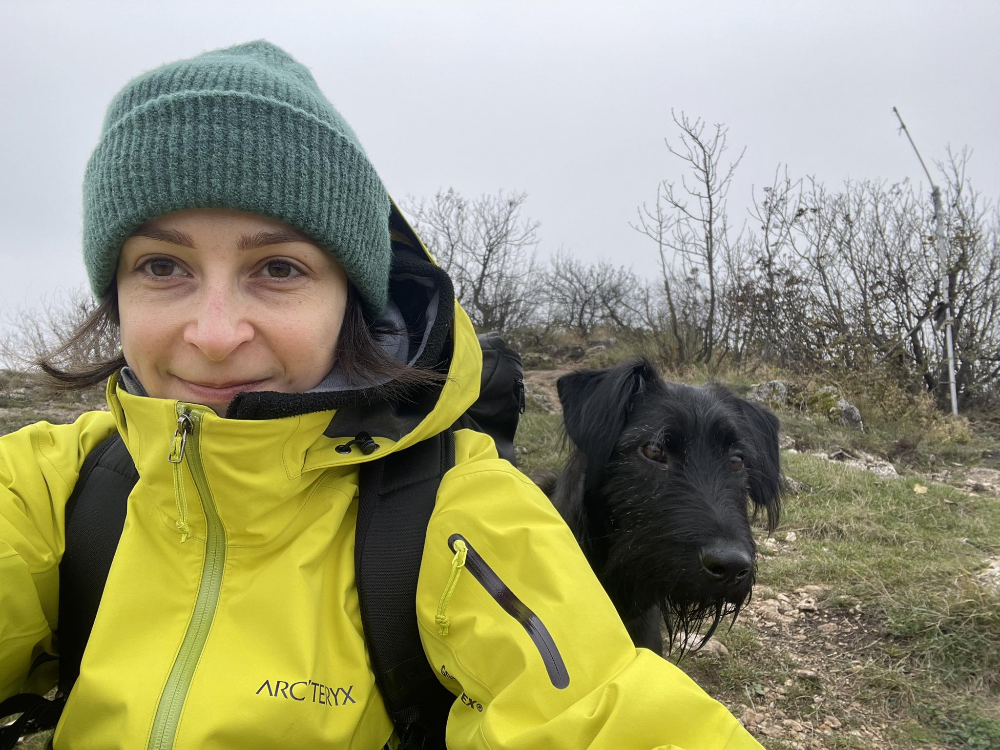

Fanni Harsanyi

Summary
Dynamic professional with a Master’s in Mechanical Engineering and a background in UI design. After running my own business for three years, I joined Vodafone, where I'm excelled for 2.5 years. Now seeking a web development role, I bring strong problem-solving skills and a blend of technical expertise and creative design.
Education
- Bachelors of Sciences, Technical Management - University of Miskolc (2013-2017)
- Masters of Sciences, Sustainable Product Creation - University of Luxembourg (2017-2019)
Work Experience
System designer - VOIS Hungary
May 2022 - Present
- Responsible for maintaining the global design system of Vodafone.
- Keeping in touch with markets worldwide to make the design system and components flexible.
Co-founder/UI designer - Self-employed
Jan 2020 - Nov 2021
- Consulting engineers and product designers regarding the product
- Designing market leading websites
- Presenting designs to steakholders and editing mockups based on client's feedback
Mechanical Design Engineer - Epic Creations
Sept 2019 - Dec 2019
- Identifying and understanding customer needs and pairing them with the suitable manufacturing processses
- Creating 3D desings and planning production: minimizing material cost by optimizing 3D files
Skills
- Creativity and Innovation:⭐⭐⭐
- Design Thinking:⭐⭐⭐⭐
- Teamwork Skills: ⭐⭐⭐⭐⭐
- Problem Solving: ⭐⭐⭐⭐⭐
- Product Development:⭐⭐⭐⭐
Awards and Certifications
- Photography Masterclass Udemy Certification - Nov 2024
- Full-Stack Web Development Udemy Certification - Jan 2025
Other